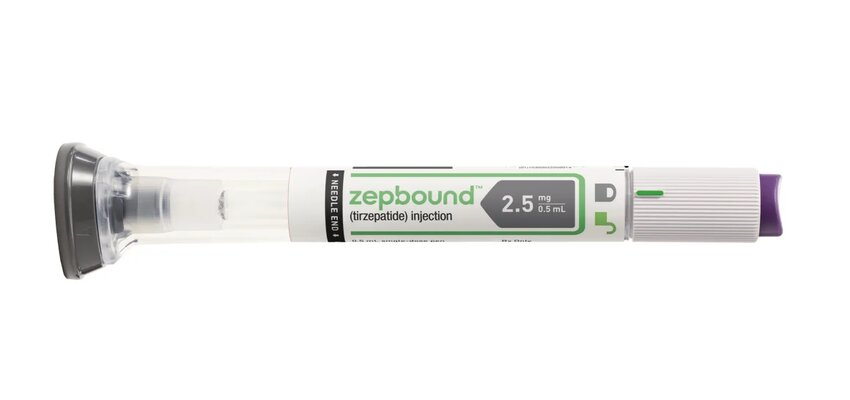

To keep pounds off, patients may need to continue taking weight loss drug, study suggests
People who take the new injectable medication tirzepatide – brand-named Zepbound – to shed pounds will need to stay on it if they want to keep the weight off, a new study confirms.
Drugs such as Ozempic, Wegovy, Mounjaro and Zepbound have revolutionized the treatment of obesity, helping people lose significant amounts of weight without surgery. With 70% of Americans overweight or obese, people are clamoring to take them. Soaring demand has outstripped their manufacturers’ capacity to make them, reshaped the economy of an entire country, and even has food sellers nervous that grocery markets may shrink as the masses eat less.
As effective as these medications are, however, they can be hard to take. They are pricey, with a cost of about $1,000 a month before insurance coverage. They can also have significant side effects, like nausea and vomiting, stomach pain and, more rarely, stomach paralysis, pancreatitis, and bowel obstructions. In clinical trials, about 1 in 5 patients who started on the active drugs, didn’t make it to the end of the study.

So a looming question about their use has been whether people could eventually stop taking them, or whether the drugs might need to be a lifelong commitment for people wanting to maintain their weight loss.
A new study published Monday in the medical journal JAMA fills in some of the details by showing what weight regain looks like after people stopped taking Zepbound.
From the start of the study to the end, the group that stayed on Zepbound weighed an average of 60 pounds less and had shed 9 inches from their waist circumference compared with when they entered the trial. People who had been switched to the placebo were down about 22 pounds from their starting weight, and still had trimmed more than 3 inches around their waist.
Aronne says that based on his experience, it’s likely that people on the placebo would continue to regain the weight they lost.p>
“How long would it take? I honestly don’t know,” he said.
While that may sound depressing for people who had hoped to one day wean off the shots, there were some bright spots in the data, Some people who stop taking the medication don’t seem to gain it back, at least not right away.